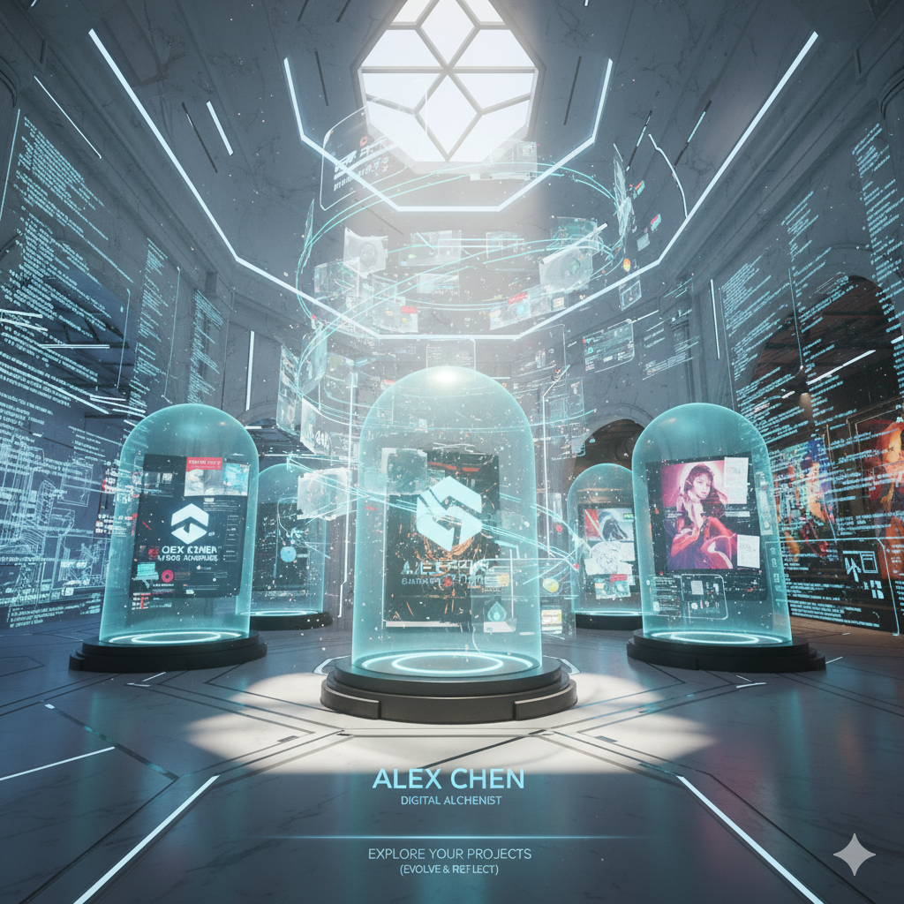

Hi, I'm Daniel Chimerumeze
I'm a passionate front-end developer and creative thinker who enjoys building modern, responsive and
visually stunning websites.
My goal is to turn ideas into digital experience that inspire and perform.
I started my journey in wed design out of curiosity, and it quicky grew into something I love doing daliy -
crafting clean interfaces, writing efficient code, and constantly learning new technologies.